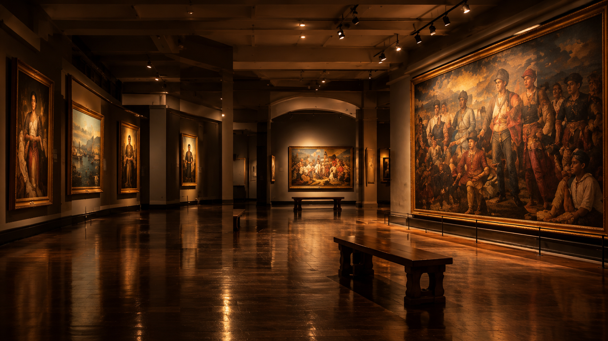
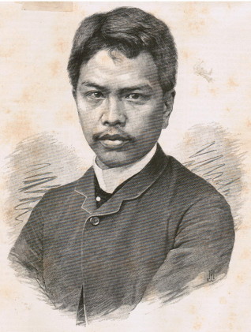
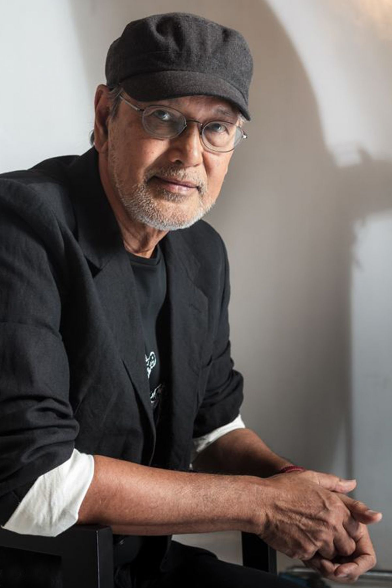
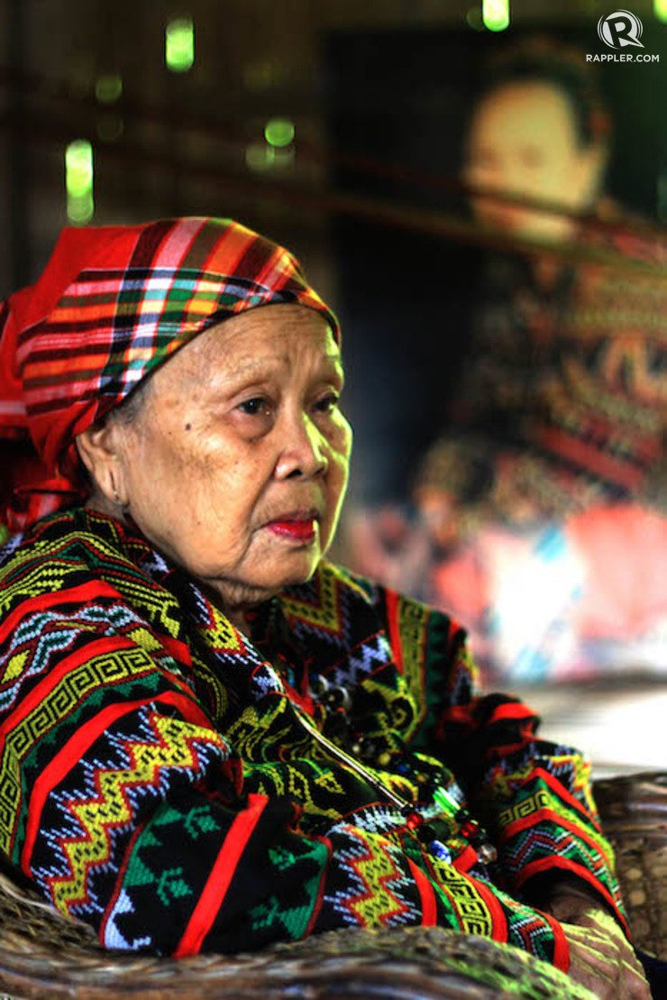
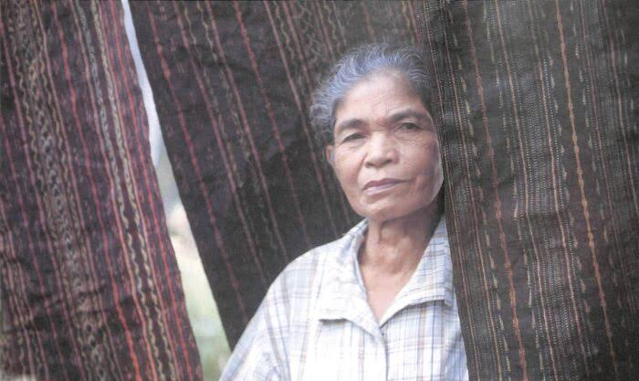
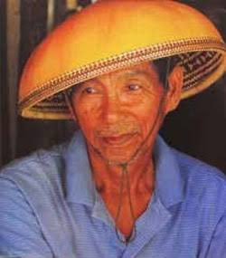

Fernando Amorsolo
A renowned Filipino painter known for his luminous landscapes, rural scenes, and distinctive use of light.
National Artist for Visual Arts

A private collection, opened to the public
Every artwork has a story. Every story deserves to be seen.
No artworks match your search.
A renowned Filipino painter known for his luminous landscapes, rural scenes, and distinctive use of light.
National Artist for Visual Arts

A celebrated Filipino painter whose historical and classical works gained international recognition during the 19th century.
National Artist for Visual Arts

A contemporary Filipino painter and printmaker whose works explore Filipino identity, history, and everyday life.
National Artist for Visual Arts

A T'boli master weaver celebrated for preserving the traditional art of T'nalak weaving and its intricate patterns.
National Living Treasure

A renowned Bagobo textile weaver recognized for her mastery of traditional abaca weaving and intricate traditional designs.
National Living Treasure

A master craftsman from Abra known for creating traditional tabungaw hats from native gourd and plant materials.
National Living Treasure
About the museum
Our Digital Museum is an online space dedicated to showcasing artworks, celebrating creativity, and preserving the beauty of art and cultural heritage. Designed to make art more accessible, our platform allows visitors to explore remarkable artworks and discover the stories behind them anytime, anywhere.
Open to the public, our digital collection welcomes students, researchers, art enthusiasts, and anyone interested in exploring the world of art. Each artwork offers an opportunity to learn about its artist, historical background, artistic style, and cultural significance.
Through this digital experience, we aim to inspire curiosity, encourage appreciation for artistic expression, and make art accessible to a wider audience. Whether you are discovering famous masterpieces or exploring new artistic perspectives, our museum invites you to experience the beauty and meaning of art from wherever you are.